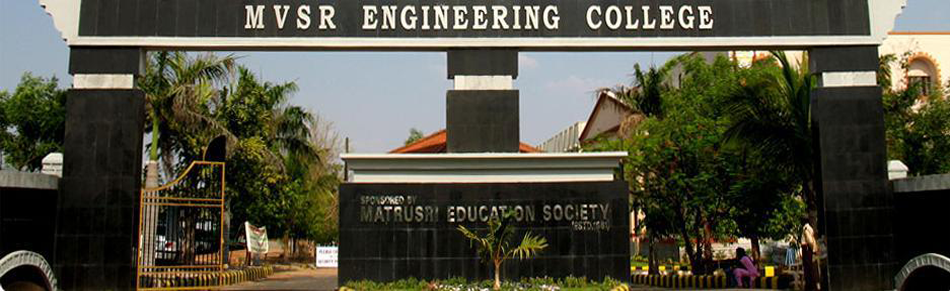

The Matrusri Education Society was founded in 1980 by a group of visionaries and philanthropists such as Arshadharmasri Late Sri Maturi Venkata Subba Rao as Founder Secretary, Maturi Gopala Rao, the architect of Nagarjunasagar Dam as Founder Chairman, besides industrialists, doctors, businessmen, administrators and advocates.
The society established Maturi Venkata Subba Rao Engineering College or MVSR Engineering College, affiliated with Osmania University, in 1981 which is now located in a campus at Nadergul, RR Dist., Telangana. The college was accredited by AICTE and approved by NBA.
MVSR Engineering College was founded in 1981 with three disciplines. The student strength at present is over 2,300. There are 160 faculty and 180 supporting staff. The college celebrated its Silver Jubilee in February 2007.
It is approved by the All India Council for Technical Education and affiliated to the Osmania University.
MVSR is ranked among the top 20 private engineering colleges in India by EFY research.
Campus Facilities
- The campus has six main academic blocks, library, canteen, games room, two stationary shops, bank, parks for recreation and two workshop buildings.
- Playground the size of a football field.
- Basketball court,a tennis court and a games room.
- Canteen.
- Career guidance and placement cell, to assist the students during campus recruitments.
Placements
The on-campus recruiting program at MVSR enables students to interview for permanent employment. Some of the companies visiting the campus are - Cognizant, Infosys, Wipro, Deloitte, MAQ, Accenture, Capgemini, Intergraph, Hitachi Consultin, Computer Science Corporation etc.
ExtraCurricular
- MVSR Campus Connect
Also known as MCC, MVSR Campus Connect is a non-profit organization, an initiative of the students of MVSR Engineering College, Hyderabad. It conducts technical fests like Samavartan, and other fests like Freedom Fest (on 15 August), We The People, Founder's Day, cultural fest like Sangamam etc. and also Sends important Messages related to college activities, etc. to Students via SMS
-
SAMAVARTHAN is the bi annual Technical Fest conducted by the college.
-
SANGAMAM is the bi annual Cultural Fest of the college.
-
"AUTOCOGNIZANCE" , a bi annual technical fest organised by mechanical engineering department
Hostel Facilities
MVSR Engineering College does not have a hostel of its own. However a private boys' hostel Sri sai Sadan Boys Hostel run by the management member (Sri. M.V. Vasudeva Rao. Jt. Secretary) is a five-minute walk from the college. This hostel is for the boys of the college.